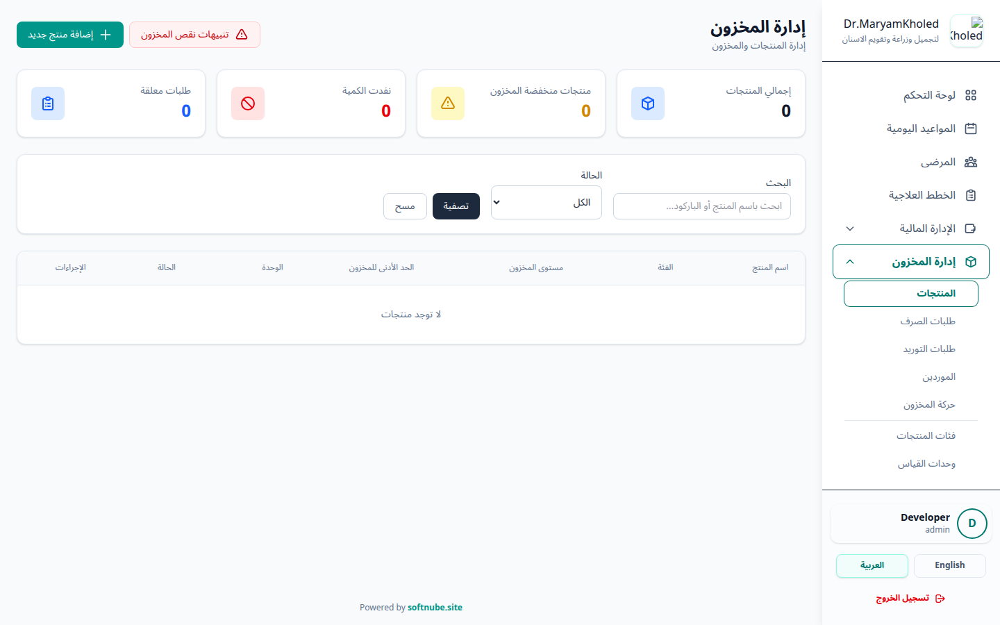
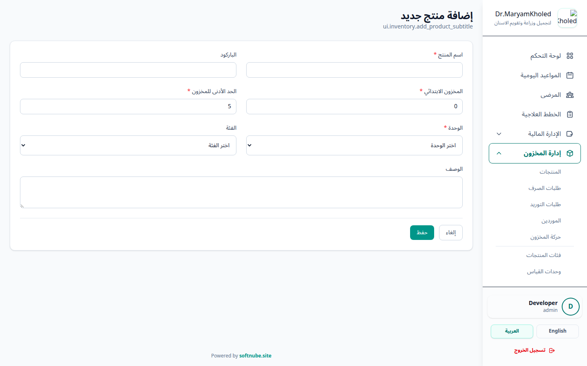
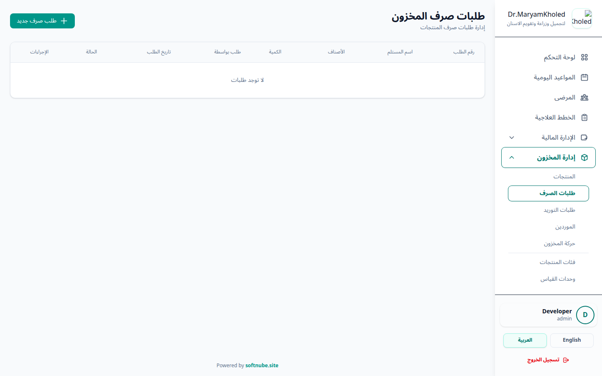
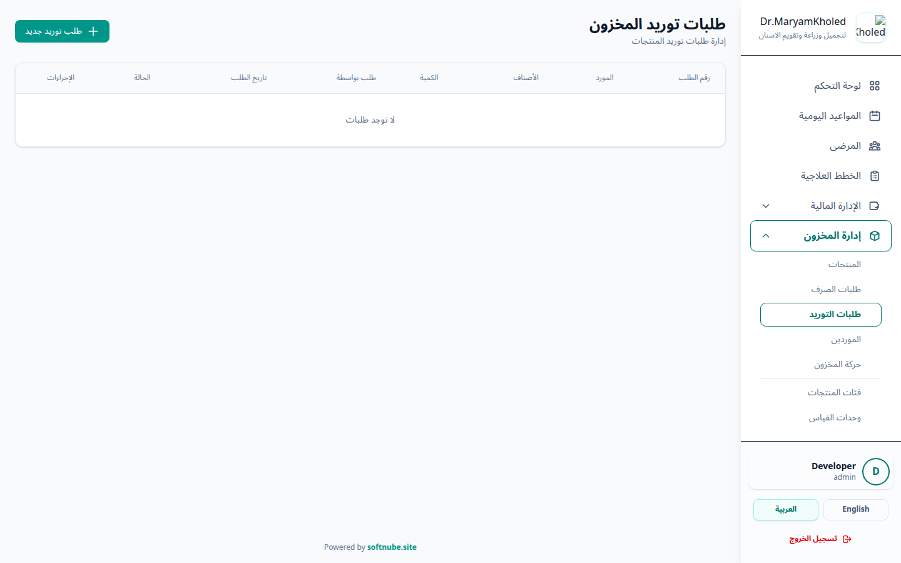
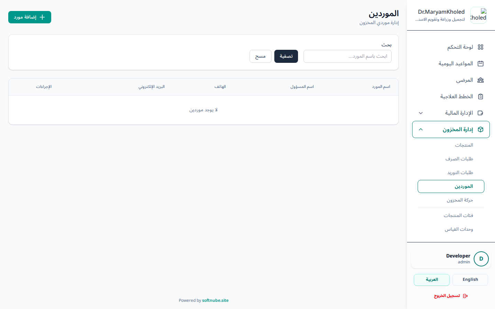
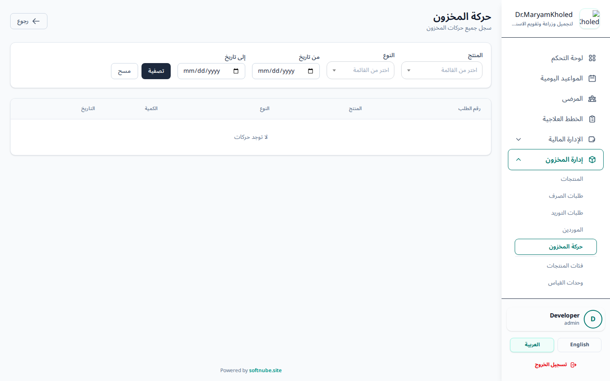
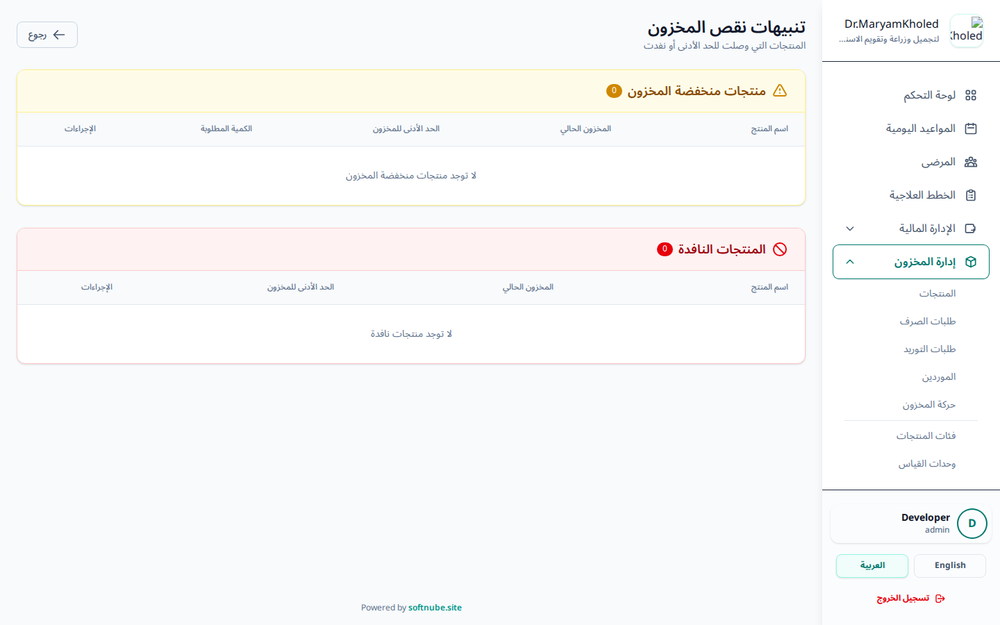

تبويب إدارة المخزون يتيح لك متابعة كافة المنتجات والمواد الطبية المستخدمة في العيادة، مما يسهل عملية تتبع
الكميات، وإصدار تنبيهات عند انخفاض المخزون، وإدارة عمليات التوريد والصرف بشكل احترافي.

شكل 1: واجهة إدارة المخزون وتوضيح المنتجات الحالية والكميات
من هذه الصفحة يمكنك الإطلاع على:
- اسم المنتج: لمعرفة تفاصيل المادة أو المنتج الطبي.
- الكمية الحالية: لمعرفة الرصيد الحالي لكل مادة.
- الحد الأدنى للمخزون: الكمية التي يصدر النظام عندها تنبيه نقص.
- الوحدة: (مثل: علبة، حبة، مل، الخ...).
- الفئة: تصنيف المنتج (اختياري).
كما توفر الصفحة أدوات بحث وفلترة تساعدك على الوصول السريع للمواد:
- البحث: بالاسم أو الباركود.
- الفئة: لعرض منتجات فئة محددة.
- الحالة: لعرض المواد منخفضة المخزون أو التي نفدت فقط.
ℹ️
ملاحظة هامة: يتم تحديث المخزون تلقائياً عند الموافقة على طلبات الصرف أو التوريد.
لإضافة مواد أو منتجات طبية جديدة إلى النظام لكي يتم تتبعها وإدارتها.
خطوات إضافة منتج:
- الضغط على زر إضافة منتج جديد في أعلى يسار صفحة المخزون الرئيسية.
- إدخال اسم المنتج (إلزامي) والباركود (اختياري) إن وُجد.
- تحديد وحدة القياس (إلزامية) والفئة (اختيارية)، مع إمكانية
إضافة وصف للمنتج.
- إدخال الكمية الحالية (الرصيد الافتتاحي للمنتج عند إضافته).
- تحديد الحد الأدنى للمخزون وهو الكمية التي سيصدر النظام عندها تنبيهاً إذا انخفض
المخزون.
- الضغط على زر حفظ لاعتماد المنتج في النظام.

شكل 2: نموذج إضافة منتج جديد إلى المخزون
تُستخدم هذه الشاشة لإدارة المواد التي يتم صرفها من المستودع للاستخدام. طلبات الصرف تقوم بتقليل الكمية
المتوفرة في المخزون عند اعتمادها.

شكل 3: إدارة طلبات صرف المواد من المستودع
كيفية إدارة طلبات الصرف:
- انتقل إلى طلبات الصرف من القائمة الجانبية أو العلوية في المخزون.
- اضغط على إنشاء طلب صرف جديد وأدخل اسم المستلم في حقل نصّي حرّ
(ليس قائمة أطباء أو عيادات).
- أضف المواد المطلوبة مع تحديد الكمية لكل مادة.
- يُحفظ الطلب بحالة قيد الانتظار، وينتظر اتخاذ قرار
بشأنه.
سير العمل (مرحلتان فقط): الطلب يبدأ بحالة «قيد الانتظار»، ثم يتم اتخاذ أحد إجرائين:
- الموافقة (اعتماد): عند الضغط على موافقة يُكمل الطلب فوراً، فيتحقق
النظام من توفر الكميات، ثم يخصمها من المخزون ويوثّق العملية في سجل الحركات، وتتحول الحالة مباشرة إلى
مكتمل. لا توجد خطوة «إكمال» منفصلة (هذا الإجراء معطّل).
- الرفض: عند الضغط على رفض تتحول حالة الطلب إلى مرفوض دون أي تعديل على المخزون.
ℹ️
ملاحظة: لا يمكن اتخاذ إجراء الموافقة أو الرفض إلا على الطلبات التي لا تزال «قيد
الانتظار».
هنا يتم تسجيل وإدارة المواد الواردة إلى العيادة (المشتريات الجديدة). طلبات التوريد تقوم بزيادة الكمية
المتوفرة في المخزون.

شكل 4: إدارة طلبات التوريد وإضافة المخزون
آلية العمل: يتم إنشاء طلب توريد مع إمكانية ربطه بأحد الموردين (حقل
اختياري)، ثم تُضاف الأصناف والكميات الواردة. يُحفظ الطلب بحالة «قيد الانتظار».
- الموافقة: عند اعتماد الطلب تزيد الأرصدة تلقائياً في المخزون وتُوثّق العملية في سجل
الحركات، وتتحول الحالة إلى مكتمل.
- الرفض: عند الضغط على رفض تتحول الحالة إلى مرفوض دون تعديل أي رصيد.
قسم مخصص لإضافة بيانات الشركات وموردي المواد الطبية لتسهيل عملية طلبات التوريد والتواصل.

شكل 5: قائمة الموردين وبيانات التواصل الخاصة بهم
- يمكنك إضافة مورد جديد بإدخال اسمه، رقم التواصل، العنوان وأي تفاصيل أخرى هامة.
- يساعد تسجيل الموردين في تتبع المشتريات ومعرفة مصدر كل دفعة توريد تم إدخالها إلى العيادة.
يتيح النظام تعديل رصيد أي منتج يدوياً دون الحاجة لإنشاء طلب صرف أو توريد، وذلك في حالات مثل الجرد، أو
تصحيح خطأ في الكمية، أو تسجيل تلف أو فقدان مادة.
خطوات إجراء تعديل يدوي على الكمية:
- افتح صفحة المنتج المراد تعديل رصيده من قائمة المخزون.
- اختر نوع العملية: إضافة (زيادة الرصيد) أو خصم (إنقاص الرصيد).
- أدخل الكمية المطلوب إضافتها أو خصمها.
- اكتب سبب التعديل (حقل إلزامي) لتوثيق العملية.
- اضغط حفظ لتطبيق التعديل.
ℹ️
ملاحظة: لا يمكن خصم كمية أكبر من الرصيد الحالي للمنتج، كما تُسجَّل كل عملية تعديل
يدوي تلقائياً في سجل حركات المخزون مع نوعها وكميتها وسببها.
هذا السجل هو بمثابة "كشف حساب" للمستودع. يقوم بعرض كل حركة حدثت على أي منتج، سواء كانت الحركة زيادة
(in/توريد) أو نقصان (out/صرف) أو تعديل يدوي، مع عرض نوع الحركة، الكمية، السبب أو المرجع، وتوقيت
العملية. كما يمكن تصفية السجل حسب المنتج أو نوع الحركة أو نطاق التاريخ.

شكل 6: سجل يعرض تفاصيل كافة العمليات التي تمت على المواد
💡
نصيحة: استخدم هذا السجل للمراجعة والتدقيق (Audit) في حال اكتشاف أي نقص أو خطأ في
الأرصدة، فهو يعرض نوع كل حركة وكميتها وسببها والوقت الدقيق لها.
توفر هذه الشاشة نظرة سريعة على المواد التي تحتاج متابعة، وتفصل بينها في مجموعتين منفصلتين:
- منخفض المخزون: مواد لا يزال لها رصيد لكنه نزل إلى الحد الأدنى أو أقل منه.
- نفد المخزون: مواد وصل رصيدها إلى صفر أو أقل وتحتاج توريداً عاجلاً.

شكل 7: المنتجات التي تتطلب إعادة طلب شراء عاجلة
تساعدك هذه التنبيهات على عدم نفاذ المواد الضرورية من العيادة وتسهيل التخطيط لطلبات التوريد القادمة.